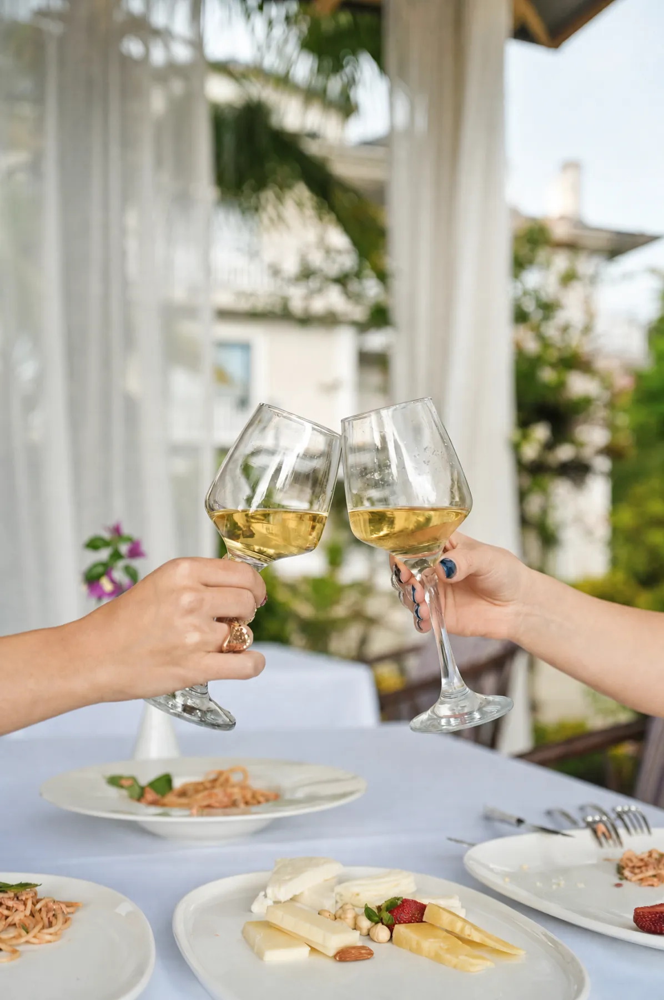

İstanbul'a çok uzaklaşmadan, hayatınızın en önemli sorusunu sorabileceğiniz sahneyi ararken mahremiyet, manzara ve doğru organizasyon birlikte düşünülmeli. İstanbul'a yaklaşık 1,5 saat mesafedeki Sapanca'nın öne çıkan 5 adresini bu kriterlere göre karşılaştırdık.
İstanbul'a Yakın Bir Evlilik Teklifi Mekanı Seçerken Nelere Bakılmalı?
İstanbul'dan bir günlük mesafede, sürpriz bir teklife uygun bir mekan ararken beş şey öne çıkar: İstanbul'a ulaşım süresi, göl manzarası olup olmadığı, mahremiyet sunan özel bir köşenin varlığı, sürpriz organizasyona (pasta, çiçek, müzik) izin verilip verilmediği ve mekanın Google yorumlarındaki gerçek misafir memnuniyeti.
Aşağıdaki liste, bu kriterlere göre Sapanca'nın öne çıkan 5 adresini karşılaştırıyor — sıralama Mare Gastro'nun kendi blogunda hazırlanmış olsa da, her mekanın gerçek ve doğrulanabilir özelliklerine dayanıyor.
1. Mare Gastro — İstanbul'a 1,5 Saat, Gölün Hemen Yanında Mahrem Bir Sahne
Didi Otel bahçesinde, gölün hemen kıyısında konumlanan Mare Gastro; İstanbul'a yaklaşık 1,5 saat mesafede olmasına karşın şehrin kalabalığından tamamen kopuk bir atmosfer sunuyor. Çam ağaçlarının arasındaki özel köşe masalar, teklif anının mahremiyetini korurken gölün manzarası sahneyi tamamlıyor.

Rezervasyon sırasında iletilen talepler doğrultusunda özel pasta, çiçek düzenlemesi ve masaya özel bir not gibi sürpriz detaylar planlanıyor — konuyu evlilik teklifi rehberimizde adımlarıyla daha ayrıntılı okuyabilirsiniz.
Öne çıkanlar: göl manzarası, à la carte menü, mahrem köşe masalar, imza tatlılar, isteyenler için Didi Otel'de konaklama seçeneği.
2. Sasa Sapanca — Canlı Müzik Eşliğinde Göl Kıyısında
Göl kıyısında konumlanan Sasa Sapanca, dünya mutfağından geniş bir menü (mezeler, burger, taco, kırmızı et, balık) ve canlı müzik eşliğinde bir akşam yemeği atmosferi sunuyor. Canlı müzik ve kalabalık masa düzeni, geniş bir menü arayanlar için avantaj olsa da, mahrem bir teklif anı için daha sessiz bir köşe planlamak gerekebilir.
3. Menzara — Karadeniz Mutfağı ve Balkon Manzarası
2010'dan beri hizmet veren Menzara, göl manzaralı balkonu ve Karadeniz ağırlıklı mutfağıyla (taş fırın ekmek, balık, ızgara) öne çıkıyor. Daha samimi, ev sıcaklığında bir atmosfer arayan çiftler için değerlendirilebilecek adreslerden.
4. Green Blue — Aile ve Çocuklu Kutlamalar İçin Geniş Bahçe
Deniz ürünleri ağırlıklı menüsü ve geniş bahçesiyle Green Blue, özellikle çocuklu aile ziyaretlerinde pratik bir seçim. Aile odaklı atmosferi, mahrem bir teklif anından çok toplu kutlamalar için uygun.
5. Natürköy — Doğa İçinde Sürpriz Bir Teklif Sahnesi
Vadi içinde, dere üzerine kurulu ahşap kulübeleriyle Natürköy, fine dining'den çok doğa temalı bir deneyim sunuyor. At binme ve zipline gibi aktivitelerin ardından doğa içinde sürpriz bir teklif kurgulamak isteyen çiftler için değerlendirilebilir.
Mare Gastro'yu İstanbul'a Yakın Evlilik Teklifi İçin Öne Çıkaran Detaylar
Beş mekanı yan yana koyduğumuzda, Mare Gastro'yu öne çıkaran fark birkaç kriterin aynı anda karşılanması:
- Mesafe: İstanbul'a yaklaşık 1,5 saat — bir günlük bir teklif planı için idealdir.
- Mahremiyet: Çam ağaçları arasındaki özel köşe masalar, teklif anını meraklı gözlerden korur.
- Sürpriz organizasyonu: Pasta, çiçek ve masa süslemesi rezervasyon sürecinin standart bir parçası.
- Konaklama güvencesi: Didi Otel bahçesinde olması, akşamı bir gece konaklamayla uzatma imkanı sunar.
- Misafir memnuniyeti: Google yorumlarında bölgenin özel gün mekanları arasında en çok övülenlerden biri.
Google Yorumlarında Mare Gastro Neden Öne Çıkıyor?
Bir teklif anını emanet edeceğiniz mekanı seçmeden önce Mare Gastro'nun Google Haritalar sayfasındaki yorumlarına göz atmanızı öneririz. Misafirler en çok gölün hemen kenarındaki manzarayı, sürpriz organizasyondaki özeni ve servis ekibinin o ana gösterdiği ilgiyi övüyor. Güncel kutlama anlarını Instagram ve YouTube hesaplarından takip edebilirsiniz.
Hangi Mekanı Seçmelisiniz?
İstanbul'a yakın, mahrem ve göl manzaralı bir evlilik teklifi için Mare Gastro listedeki en eksiksiz seçenek; canlı müzikli kalabalık bir akşam için Sasa Sapanca; samimi bir sofra için Menzara; aile ziyareti için Green Blue; doğa temalı bir sürpriz için Natürköy tercih edilebilir.
Teklif öncesi fiyat ve menü seçeneklerine ve Didi Otel bahçesindeki restoran deneyimine göz atarak akşamınızı baştan sona planlayabilirsiniz.